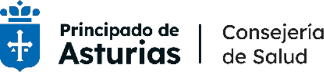
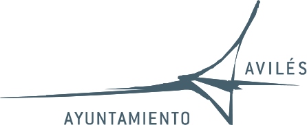

Por qué esta jornada
La Consejería de Salud del Principado de Asturias organiza, con la colaboración del Ayuntamiento de Avilés y el Servicio de Salud del Principado de Asturias, la II Jornada de Inteligencia Artificial y Transformación Digital en Salud, un espacio de encuentro y reflexión orientado a analizar cómo la transformación digital está contribuyendo a la evolución del sistema sanitario y, especialmente, su impacto en la práctica clínica.
La jornada permitirá acercarse a experiencias, herramientas y soluciones basadas en inteligencia artificial que pueden favorecer la mejora de los procesos asistenciales, apoyar a los profesionales en la toma de decisiones y contribuir a una atención sanitaria más eficiente, personalizada y adaptada a las necesidades de las personas.
Impacto clínico
Profundizar en cómo la IA continúa transformando el sistema sanitario, con énfasis en su aplicación práctica en la medicina clínica.
Casos de éxito reales
Difundir soluciones consolidadas: herramientas y experiencias de IA que ya optimizan los procesos asistenciales y el análisis de datos clínicos.
Red de colaboración
Mantener la jornada como un espacio de encuentro entre profesionales sanitarios, ingenieros, investigadores y gestores del Principado de Asturias.
Ética y regulación
Abordar el papel de la IA como soporte al criterio profesional: retos éticos, privacidad de datos y marcos regulatorios para una implantación segura.
Eficiencia y personalización
Identificar nuevas oportunidades de innovación digital para una asistencia más personalizada, accesible y centrada en las personas.
Dos días, un mismo hilo conductor
Consulta las sesiones de cada jornada. Los nombres en el programa enlazan directamente con la biografía del ponente, y cada sesión se puede añadir al calendario.
29/09/2026 — SESIÓN DE TARDE — AUDITORIO CENTRO NIEMEYER
- IA en medicina clínica: más allá de ChatGPT — José Miguel Vegas Valle
- Modelos de lenguaje pequeños en local: qué se pierde y qué se gana — Luciano Sánchez Ramos
Ponente: Josep Franch Nadal
- María Concepción Saavedra Rielo — Consejera de Salud, Principado de Asturias
- Ana Suárez Guerra — Concejala de Mayores y Ciudad Saludable, Ayuntamiento de Avilés
- Asunción Artime García — Gerente Área I-Occidente
- José Manuel Fernández Carreira — Comité Organizador
Presenta: Pablo Fernández Muñiz · Ponente: Juan Fernando Muñoz Montalvo
30/09/2026 — SESIÓN DE MAÑANA — AUDITORIO CENTRO NIEMEYER
Modera: Edgar Lazcano Jakimczuk
- Modelos fundacionales en cardiología: aprendizaje multimodal para la predicción cardiovascular y aplicación a enfermedades raras — Nahuel Alejandro Costa Cortez
- Predicción de supervivencia individual en cáncer de pulmón mediante radiómica y algoritmos de IA — Amadeo Wals Zurita
- Health Assistant: agentes de IA ayudando al profesional en la Historia Clínica — Rafael Comendador Romero
- Decisiones sanitarias en la era de la inteligencia artificial — Héctor Calvarro Martín
Modera: Isolina Riaño Galán
- ¿Puede la inteligencia artificial cuidar respetando los valores humanos? Una mirada desde la bioética — Àtia Cortés Martínez
- Gemelos digitales: el nuevo paradigma de la salud personalizada — Myriam Fernández Martín
Modera: Pedro Abad Requejo
- Cuélebre y TrASgu: del dato clínico a la medicina predictiva — Pedro José Espinosa Prados
- El impacto de la IA en los sistemas de información del Servicio de Salud del Principado de Asturias. Hacia dónde nos dirigimos — Yolanda López Mínguez
- Estrategia de IA en el Principado de Asturias — Javier Fernández Rodríguez
- Miguel Ángel Prieto García — Director General de Salud Pública y Atención a la Salud Mental, Consejería de Salud
- Lidia Clara Rodríguez García — Directora General de Planificación, Gestión del Conocimiento y Transformación Digital Sanitaria
- Luciano Sánchez Ramos — Catedrático de Ciencias de la Computación e Inteligencia Artificial, Universidad de Oviedo
Ponentes y comité organizador
Busca por nombre o institución, o cambia entre ponentes y comité organizador / moderadores.
No se han encontrado participantes con ese nombre.
Sede, inscripción y acreditación
Auditorio Centro Internacional Oscar Niemeyer
Av. del Zinc, s/n, 33490 Avilés, Asturias
Ver en el mapaInscripción
La inscripción a la jornada se realiza a través del formulario online.
Pulse aquí para inscribirseOrganizado por

